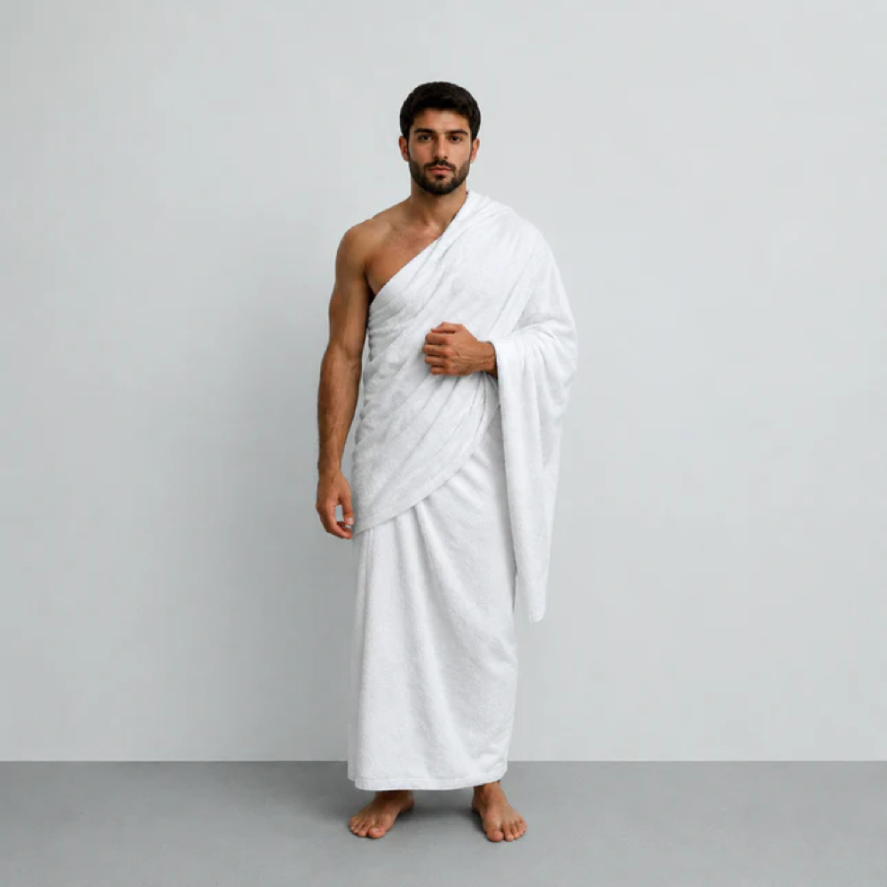
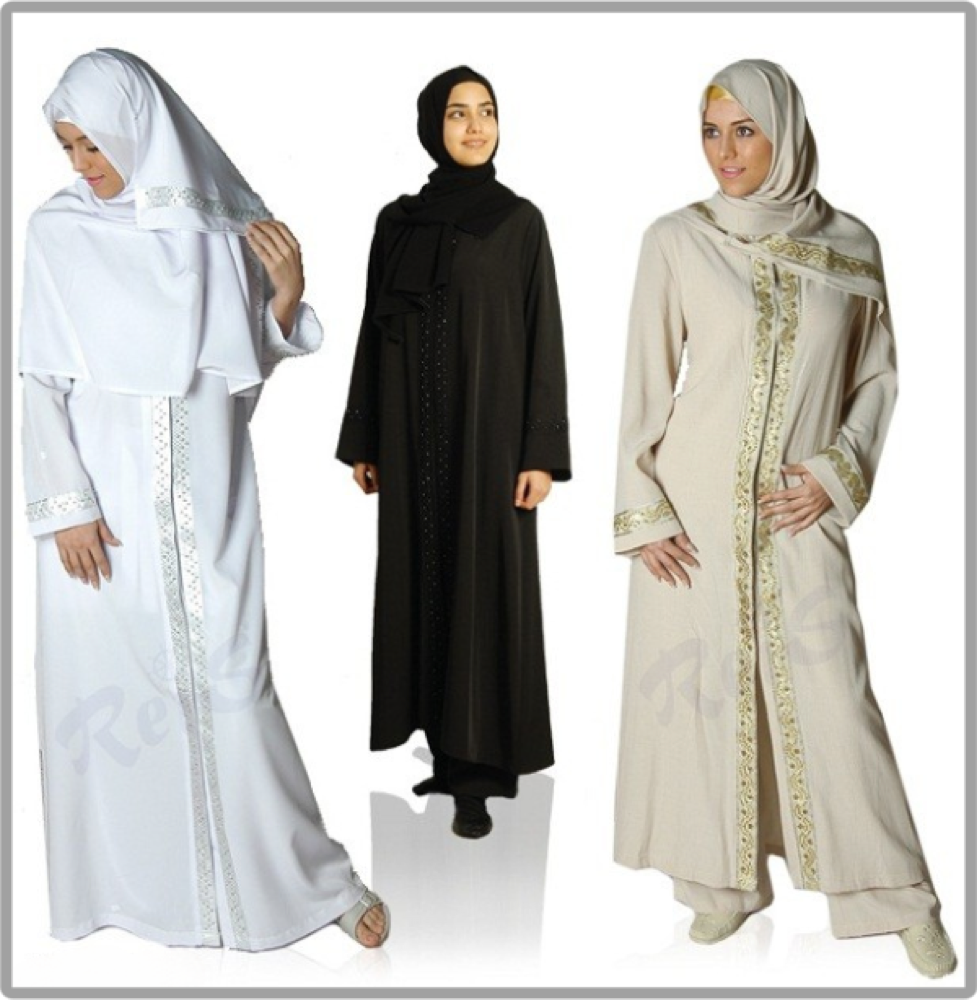

Umre İhramı
Umre ihramı nedir, erkek ve kadın nasıl hazırlanır, ihram yasakları nelerdir?
Bu sayfada ne öğreneceksiniz?
Umre ihramı, kıyafet ve yasaklar hakkında ayrıntılı rehber. Konuyu özet geçmeden, ilk kez umreye gidecek birinin gerçekten işine yarayacak şekilde anlatıyoruz.
Pratik yaklaşım
Umrede bilgi kadar sıra, sakinlik ve hazırlık önemlidir. Bu bölümde hem ibadet tarafını hem de yolculukta karşılaşılabilecek pratik durumları birlikte okuyacaksınız.
A. İhram Nedir?
İhram, umreye niyet ederek bazı davranışlardan uzak durma halidir. Sadece kıyafet değildir; kişinin söz, davranış ve niyet bakımından ibadete girdiğini gösterir.
Erkekler iki parça dikişsiz beyaz örtüyle ihrama girer. Kadınlar ise normal tesettür kıyafetiyle ihrama girer; yüz ve eller konusunda mezhep ve uygulama bilgisi için rehber hocaya danışılır.
İhram, umreye niyet ederek bazı davranışlardan uzak durma halidir.
B. İhrama Girmeden Önce
İhrama girmeden önce gusül veya abdest almak, tırnak ve kişisel temizliği tamamlamak, ihram kıyafetini hazırlamak ve iki rekat namaz kılmak tavsiye edilir. Temizlik işleri ihrama girdikten sonra yasak kapsamına girebileceği için önceden yapılmalıdır.
Koku kullanımı konusunda dikkatli olunmalıdır. İhrama girdikten sonra parfüm ve kokulu ürünlerden kaçınmak gerekir. Bu nedenle yolculuk çantasında kokusuz sabun ve kokusuz ıslak mendil bulundurmak faydalıdır.
İhrama girmeden önce gusül veya abdest almak, tırnak ve kişisel temizliği tamamlamak, ihram kıyafetini hazırlamak ve iki rekat namaz kılmak tavsiye edilir.


C. Telbiye ve Niyet
Mikata gelmeden önce umreye niyet edilir ve telbiye okunur. Telbiye, kulun Allah’ın davetine icabet ettiğini ifade eden güçlü bir duadır. Umre boyunca özellikle ihramlıyken sıkça tekrar edilebilir.
Niyet kalben yapılır; dil ile ifade etmek de güzeldir. Kafileyle yolculuk eden kişi rehberin yönlendirdiği zamanda niyet ve telbiyeyi birlikte yapabilir.
Mikata gelmeden önce umreye niyet edilir ve telbiye okunur.
D. İhram Yasakları
İhramlıyken saç ve tırnak kesmek, koku sürmek, av hayvanına zarar vermek, tartışmak ve evlilik ilişkisine girmek gibi yasaklara dikkat edilir. Erkekler başı kapatmaz ve dikişli normal kıyafet giymez.
Yanlışlıkla yapılan durumlarda panik yapılmamalı; rehber hoca veya yetkili din görevlisine sorulmalıdır. Bazı ihlallerde ceza veya fidye gerekebilir, bazıları ise özür durumuna göre değerlendirilir.
İhramlıyken saç ve tırnak kesmek, koku sürmek, av hayvanına zarar vermek, tartışmak ve evlilik ilişkisine girmek gibi yasaklara dikkat edilir.
Dua ve Zikir
لَبَّيْكَ اللَّهُمَّ لَبَّيْكَ، لَبَّيْكَ لَا شَرِيكَ لَكَ لَبَّيْكَ، إِنَّ الْحَمْدَ وَالنِّعْمَةَ لَكَ وَالْمُلْكَ، لَا شَرِيكَ لَكَ
Okunuşu: Lebbeyk Allahümme lebbeyk. Lebbeyke lâ şerîke leke lebbeyk. İnnel hamde ven ni'mete leke vel mülk. Lâ şerîke lek.Anlamı: Buyur Allah’ım buyur. Senin hiçbir ortağın yoktur. Hamd, nimet ve mülk yalnız Senindir.İhrama girmeden önce temizlik, kıyafet, niyet ve yasaklar netleşirse umrenin en hassas başlangıç aşaması huzurla geçer.